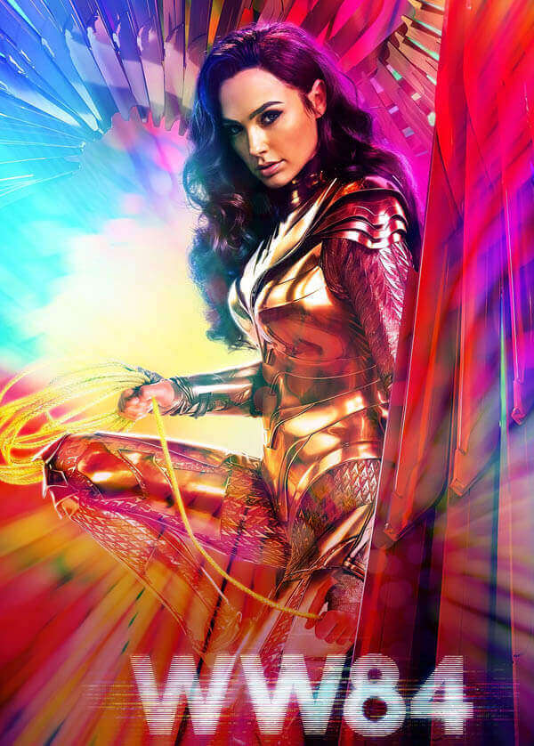

Wonder Woman 1984
Language: English
Release Date: Dec 25,2020
Genre: Superheroin
Duration: 2hr 31mins
 8.5/10
8.5/10 7.6/10
7.6/10 87%
87% 66/100
66/100
 8/10
8/10 3/5
3/5 3/5
3/5 3/5
3/5 3/5
3/5 3/5
3/5 Book Now
Book Now Book Now
Book Now
 Book Now
Book Now Book Now
Book Now
Official Social Media Accounts
 Connect Now
Connect Now Connect Now
Connect Now Connect Now
Connect Now
Official Website
More Similar Movie(s)


Description
An immortal demigoddess, Amazon princess, and warrior. Diana is the daughter of Hippolyta the Amazonian Queen of Themyscira, and the King of the Olympian Gods, Zeus.
An American pilot, and the love interest of Diana, who had presumably died during the events of the first film.
A British archaeologist, who after locating the lost city of Urzkartaga, stumbles into an ancient ritual, and becomes the host of their Cheetah-goddess.
A business man and entrepreneur.
The queen of Themyscira and Diana's mother.
Hippolyta's deceased sister, general of the Amazon army, and Diana's aunt. She will appear in flashbacks.
Cast with Roles
Director(s): Patty Jenkins
In 1984, during the Cold War, Diana Prince comes into conflict with two formidable foes—media businessman Maxwell Lord and friend-turned-enemy Barbara Ann Minerva while reuniting with her love interest Steve Trevor.Source:WikipediaPlot
Hot Updates
After Shah Rukh Khan, Gal Gadot illuminates Burj Khalifa ahead of 'Wonder Woman 1984' releaseBy:DNA - 16 December,2020
WONDER WOMAN 1984 FIRST REVIEWS: A FUN, FEEL-GOOD ROMP TO END THE YEAR ON A HIGH NOTEBy:Rotten Tomatoes - 16 December,2020
Wonder Woman 1984 Review: Superhero Sequel is A Blast, From the PastBy:Den of Geek - 16 December,2020
'Wonder Woman 1984' Will Be DC Films' First True SequelBy:Forbes - 08 December,2019
First Wonder Woman 1984 Trailer Confirmed To Release This SundayBy:Screen Rant - 06 December,2019
Gal Gadot reveals her husband and their two kids have brief cameos in Wonder Woman 1984 along with director Patty Jenkins' husbandBy:Daily Mail - 17 December,2020 Wonder Woman 1984 review round-up: Gal Gadot-starrer is an ‘escapist superhero sequel’By:Indian Express - 16 December,2020 After Shah Rukh Khan, Gal Gadot illuminates Burj Khalifa ahead of 'Wonder Woman 1984' releaseBy:DNA - 16 December,2020 WONDER WOMAN 1984 FIRST REVIEWS: A FUN, FEEL-GOOD ROMP TO END THE YEAR ON A HIGH NOTEBy:Rotten Tomatoes - 16 December,2020 Wonder Woman 1984 Review: Superhero Sequel is A Blast, From the PastBy:Den of Geek - 16 December,2020 Wonder Woman 1984 review: DC’s latest is a piece of hopeful, uncynical filmmakingBy:Independent - 16 December,2020 Wonder Woman 1984 review – queenly Gal Gadot disarms the competitionBy:The Guardian - 15 December,2020 ‘Wonder Woman 1984’: A Superhero Takes on Greed, Misogyny, Shoulder PadsBy:Rolling Stone - 15 December,2020 Wonder Woman 1984 is a better rom-com than superhero movieBy:Vox - 15 December,2020Reviews and News(After Release)
Wonder Woman 1984 first reviews: Critics hail DC sequel as ‘the film we need right now’By:Independent - 07 December,2020 Wonder Woman 1984 Has Critics Floored, Set For A Good OpeningBy:News18 - 07 December,2020 WONDER WOMAN 1984 FIRST REACTIONS: THE PERFECT BEACON OF HOPE FOR 2020By:Rotten Tomatoes - 06 December,2020 Wonder Woman 1984 early reactions: Gal Gadot-starrer is an ‘absolute blast from start to finish’By:Indian Express - 06 December,2020 Wonder Woman 1984 Director Reacts To The Film’s New Release DateBy:Cinema Blend - 14 June,2020 ‘Wonder Woman 1984’ Jumps To October Following ‘Tenet’ Summer ShiftBy:Deadline - 14 June,2020 Wonder Woman 1984 trailer reveals new villains and the movie's '80s themeBy:TechRadar - 09 December,2019 'Wonder Woman 1984' Will Be DC Films' First True SequelBy:Forbes - 08 December,2019 First Wonder Woman 1984 Trailer Confirmed To Release This SundayBy:Screen Rant - 06 December,2019 Is Steve Trevor's return in Wonder Woman 2 just another absurd resurrection?By:The Guardian - June 20, 2018 Behind The Scenes Video Of Gal Gadot Filming 'Wonder Woman 1984' Shows The Real Struggle Of Being Diana PrinceBy:ELLE.com - June 20, 2018 You might see Wonder Woman 1984 shooting in WashingtonBy:CNET - June 18, 2018 First photos from 'Wonder Woman 1984' confirm that Chris Pine is returning as Steve TrevorBy:Business Insider UK - June 13, 2018 Wonder Woman 2 Has a Title Now, Also Steve Trevor Is BackBy:Cosmopolitan.com - June 13, 2018 Why Bringing Back Chris Pine In 'Wonder Woman 1984' Is A MistakeBy:Forbes - June 13, 2018 The "Wonder Woman" Sequel Has A Title And A Steve TrevorBy:BuzzFeed News - June 13, 2018 Patty Jenkins Shares Surprising First Glimpse of 'Wonder Woman' SequelBy:Hollywood Reporter - June 13, 2018 Wonder Woman 1984 First Look: Steve Trevor Is Alive?!By:E! Online - June 13, 2018News(Before Release)



Wonder Woman 1984
Videos
Main Trailer #1
Opening Scene
Main Trailer #2 CCXP :60More Videos